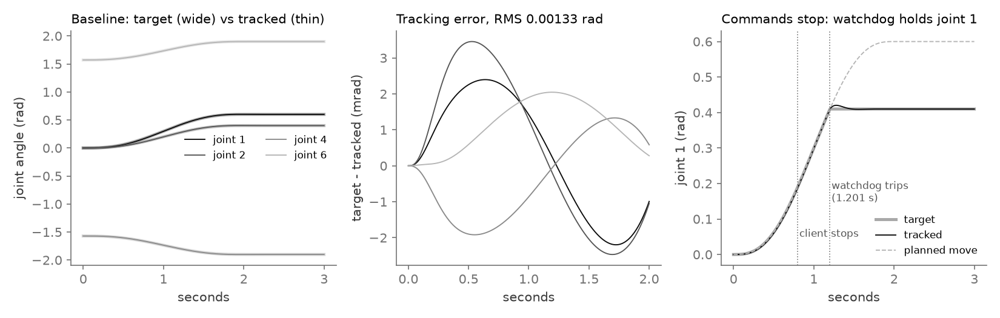
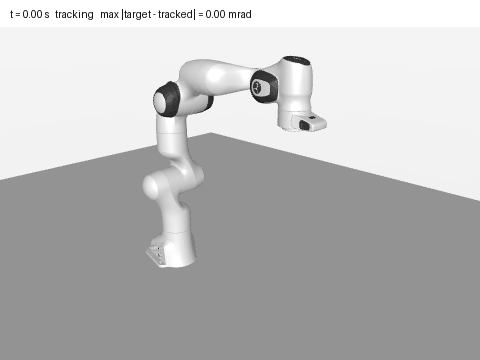
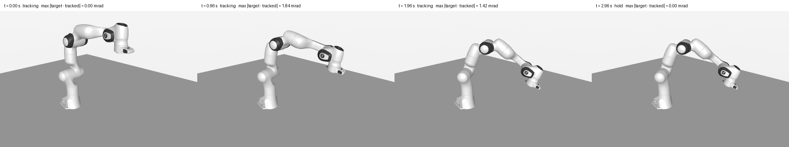

A C++17 ROS 2 node drives a simulated Franka Panda through the MuJoCo C API with quintic trajectories and PD + gravity compensation at 1 kHz. Fault-injection tests attacked the command stream and found two real bugs, each fixed and written up as a root-cause analysis.
Goals get re-sent to keep a watchdog fed, dropped by the network, delivered late, or stop arriving when a client dies. Each of those can make the reference the arm is tracking jump, and a jump in the reference becomes a torque spike.
Tracking error, the largest reference jump in one 1 ms tick, and how many ticks hit the torque limit, for each injected fault.
The reference may never move more than the joint velocity limit times 1 ms per tick. Every fault test asserts it.
Re-sends every 100 ms, 30% dropped, 300 ms late, one message 5 s stale, client dies mid-move, NaN and over-limit goals.
Hardware or hard real time. It runs in simulation on a normal Linux kernel.
ROS 2 Jazzy, colcon and libmujoco from pixi and RoboStack, with no sudo and no system ROS install.
Position range, waypoint velocity, densely sampled peak velocity, NaN and Inf, and timing. A bad goal is rejected and the current motion carries on.
Position, velocity and acceleration are continuous, so the reference itself never asks for a step in torque.
PD with gravity and Coriolis compensation from MuJoCo's qfrc_bias, clamped to the Panda's 87 and 12 N·m torque limits, applied through qfrc_applied.
If no command arrives within the timeout, the watchdog holds the measured position instead of finishing a move nobody is asking for any more.
Unit and fault tests run it straight against MuJoCo, fast and deterministic.
A node and a client in one process exchange real ROS messages.
Logs of the failing first run are committed next to the fixed run.
Controller core and MuJoCo Panda in simulated time, a 2 s move to the same goal in every scenario, then 1 s to settle.
Radians, bar length to 0.6 rad. The allowed bound is 0.0026 rad per tick.
Radians, bar length to 0.04 rad.
| Measure | Result | Reading |
|---|---|---|
| Integration test over ROS topics | 0.00132503 rad | RMS tracking error; final error 6.2e-08 rad |
| Torque-saturated ticks, 5 s stale message | 167 → 0 | a step response before RCA-002 |
| Watchdog, commands stop at 0.8 s | 1 trip | holds with 0.0123 rad drift |
| Bad goals over ROS | 2 / 2 | rejected, 0 drift |
| Control rate | 999.8 / s | soft real time, normal kernel |

trajectory_demo tool (controller core + MuJoCo C API, no ROS) at every 1 ms tick to results/demo/trajectory.csv. The baseline RMS of 0.00133 rad matches results/fault_injection.json. Right: the last command arrives at 0.7 s, the 0.5 s watchdog trips at 1.201 s and holds joint 1 where it is.

scripts/make_demo_figures.py.The new trajectory took its start state from "now" but its start time from the old message stamp, so every re-send skipped the reference ahead: 0.165 rad in one tick and 3 torque-saturated ticks on a normal command pattern. Fix: evaluate the current plan at the new trajectory's own t = 0, so a re-send rebuilds an identical trajectory. Read RCA-001
The controller trusted the message stamp as the trajectory start. A 300 ms late stream jumped 0.215 rad; one 5 s stale message stepped joint 1 by 0.6 rad and held torque at its limit for 167 ms. Fix: check that the reference is continuous at now and, if not, re-anchor the move to now, once per stamp. Read RCA-002
Both bugs passed every per-trajectory check. The jump came from where sampling started, which is why every fault test now bounds the change per tick.
Dropped messages, commands stopping and bad goals were already handled by the design. RCA-003 records that instead of inventing bugs.
Both nodes run in one process for the integration test; there is no launch_testing or ros2 CLI demo. Stale goals run late rather than being refused. The client must re-send faster than the timeout. Soft real time only.
CI and a Dockerfile, a launch-file demo, a max-latency reject option, jerk logging and inertia feed-forward.
pixi install # ROS 2 Jazzy + colcon + libmujoco, about 1.5 GB scripts/build_and_test.sh # colcon build, colcon test, test-result pixi run bash -c 'source install/setup.bash && \ install/arm_motion_control/lib/arm_motion_control/motion_control_node'